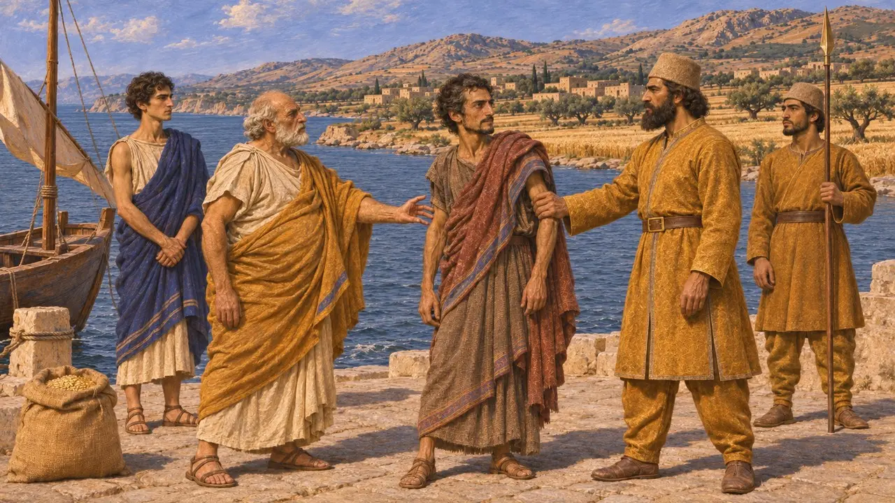
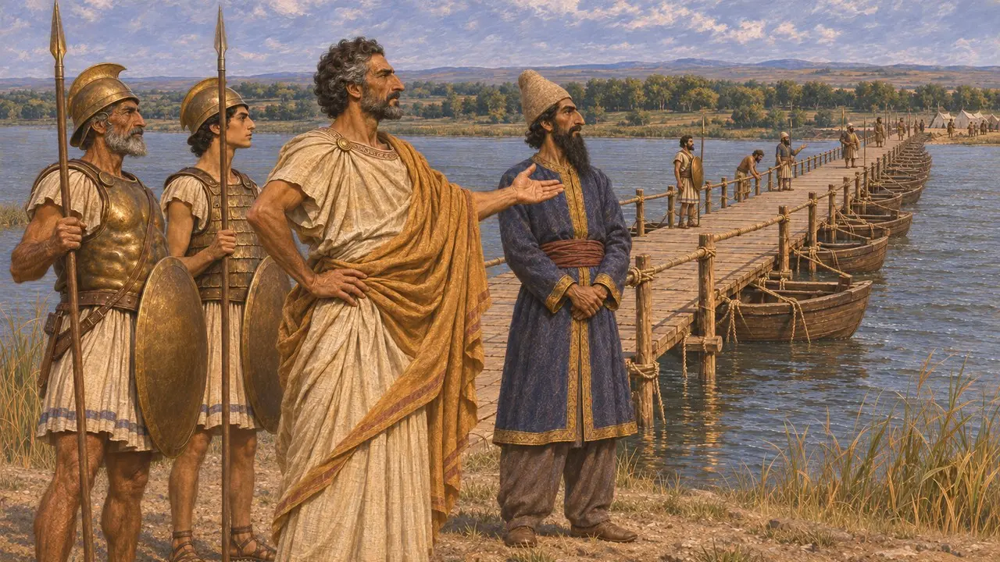
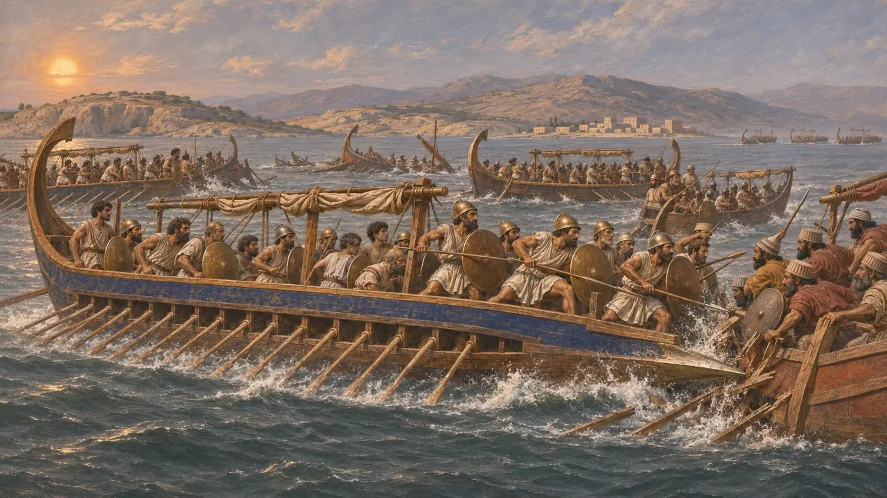
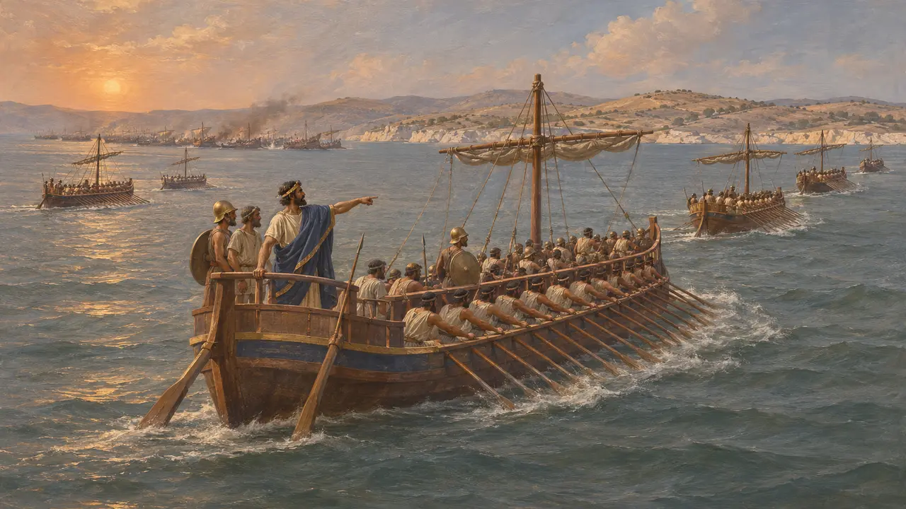
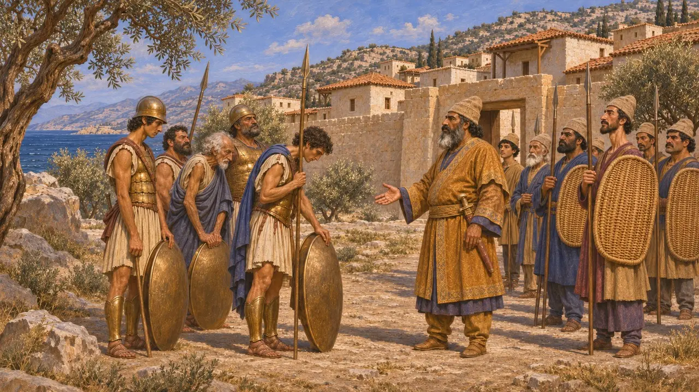
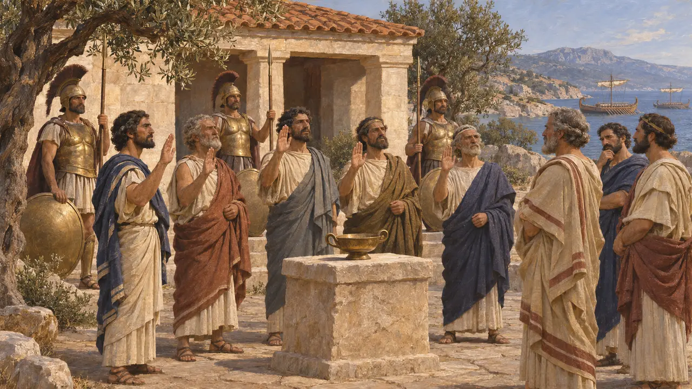

Sakızlılar
Lidya kıyısı açığındaki Sakız (Khios) adasının İyonyalı Yunanları, MÖ 6. ve 5. yüzyıl
Oyunda: Bölüm 7: Sardes Yanıyor
Sakızlılar, Sakız adasında yaşayan ve Harpagos'un İyonya'yı fethinden sonra Pers egemenliğine giren İyonyalı Yunanlardı. 494'te Lade'ye 100 gemi gönderdiler, Herodotos'un bir İyon kenti için verdiği en büyük sayı; öbürleri ayrıldıktan sonra da savaşmayı sürdürdüler. Bu yenilgiden sonra Pers adalarını aldı.
Oyunda: Oyun Sakızlıları Vakayinamede, fermanlarda ve savaş alanı brifinglerinde anar ve onlara bu metinlerin gösterdiğinin ötesinde bir mekanik vermez. Kral'ın tarafına geçtiklerini söyleyen notu, onları Lade'de sonuna dek savaştırıp boyun eğdirilmiş gösteren Herodotos'tan ayrılır.

Persler altında Sakız
Antik anlatıHerodotos'a göre Sakızlılar Lidyalı asi Paktyes'i Perslere teslim ettiler ve karşılığında anakaradaki Atarneus bölgesini aldılar. Bunu Kyros döneminde Lidya'nın fethinden sonra anlatır. Sakızlıların Atarneus tahılını tanrılara sunulan kurbanlarda kullanmadığını da ekler.
Herodotus 1.160

İstros'ta bir tiran
Antik anlatıHerodotos Sakızlı Strattis'i, Dareios'un İskit seferi sırasında İstros köprüsünü koruyan Yunan tiranları arasında sayar. Persler İyon kentlerini ellerinde tutmak için bu tür yerel yöneticilere dayanıyordu. Herodotos 499 ayaklanmasının bu tiranları devirmekle başladığını söyler.
Herodotus 4.138

Lade'de Sakızlılar
Antik anlatıHerodotos'a göre Sakızlılar Lade'ye her birinde savaşçı olarak kırk seçme yurttaş bulunan 100 gemi getirdi. İyonyalıların Phokaialı Dionysios'un dayattığı ağır talimden bıktığını söyler. Samos gemilerinin çoğu uzaklaştı, Midillililer de onları izledi. Sakızlılar savaşmayı sürdürdü, düşman hattını defalarca yardı ve gemilerinin çoğunu yitirdi.
Herodotus 6.12-15

Samosluların tartışmalı tutumu
TartışmalıHerodotos Samoslu kaptanların çoğunu kaçmakla suçlar ve Perslerle gizli bir anlaşma yaptıklarını söyler. Kalıp yurtlarında onurlandırılan on bir Samoslu kaptanın adını da verir. Modern tarihçiler savaş sonrası bir Yunan geleneğinden gelen bu tek yanlı anlatının sorgusuz kabul edilebileceğinden kuşkuludur.
Herodotus 6.13-14

Miletos ve Sakız'ın düşüşü
Antik anlatıHerodotos'a göre Miletos Lade'den sonra kuşatmayla alındı; Persler surlarının altını kazdı. Ardından Perslerin adaları aldığını, Lade'den sağ kalan Sakızlıların yenilip adalarının boyun eğdirildiğini söyler.
Herodotus 6.18-32

Mykale'den sonra
Antik anlatıHerodotos'a göre 479'daki Mykale zaferinden sonra Yunanlar Samosluları, Sakızlıları, Midillilileri ve öteki adalıları ittifaklarına kabul etti. Bunlar sadık kalacaklarına ve ittifaktan ayrılmayacaklarına ant içtiler.
Herodotus 9.106
Kaynaklar
- Herodotus 6.8-32
- Herodotus 1.160
- Herodotus 4.138
- Herodotus 9.106
- P. Briant, From Cyrus to Alexander, 2002